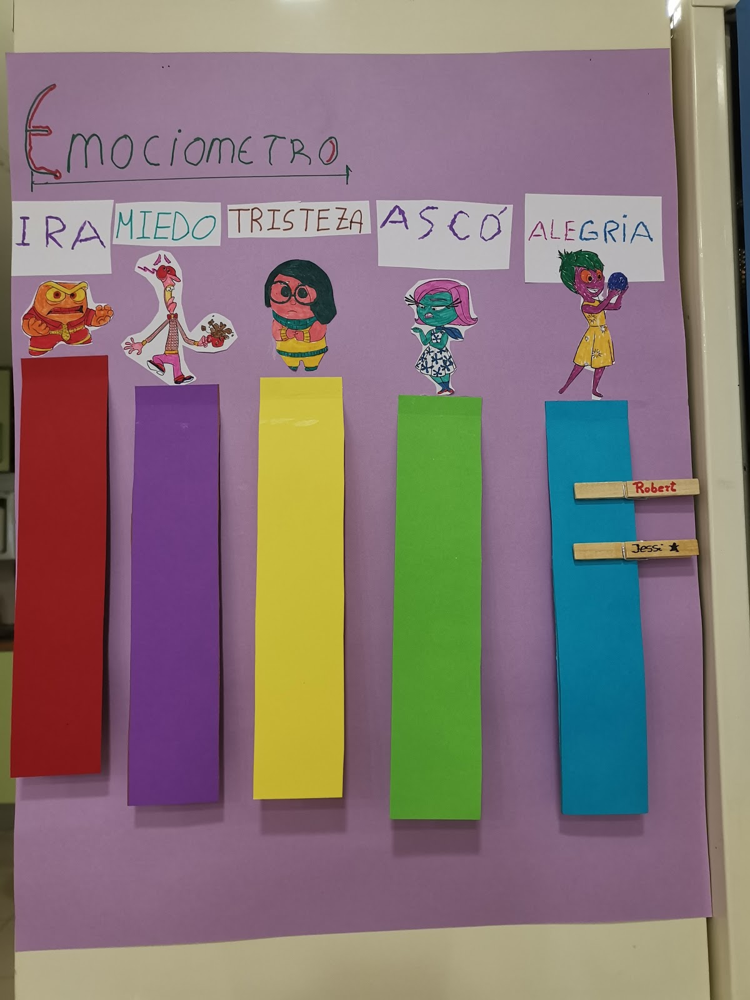

Donde se ha llevado a cabo: En el Centro de Dia KIDE de Lagun Artean.
Tras hacer un diagnóstico de la realidad se ha observado que entre las personas usuarias del centro existen dificultades para identificar y gestionar emociones. Por ello, y dado que a día de hoy la educación emocional es imprescindible se ha pensado en la idea de llevar a cabo un taller de emociones en el centro de día de Lagun Artean.
Además de esa razón para llevar a cabo el taller, existe otra justificación más. Según Goleman (año), hay dos tipos de mente dentro de nuestro cerebro. Por un lado, está el lado izquierdo del cerebro, el cual trabaja la parte racional. Por otro lado, está el lado derecho de nuestro cerebro, el cual se ocupa de toda la parte emocional.
Históricamente se le ha dado muchísima más importancia a desarrollar esa parte izquierda del cerebro, dejando totalmente de lado la parte derecha, osea, la emocional. Se nos ha educado para que compitamos y demos más importancia a sacar buenas notas que a estar emocionalmente bien.
Es importante incidir en el desarrollo de la educación emocional a día de hoy porque segun la educación tradicional se le ha dado más importancia a todo aquello que no tiene que ver con lo emocional y con la inteligencia emocional, es decir, a la parte racional del cerebro. Por ello, veo una gran labor en darle la vuelta a esta situación y empezar a darle la importancia que merece a las emociones, ya que están en correlación con la parte racional.
Objetivos de la actividad: tener una idea general de lo que son las emociones, conocer las emociones más básicas y diferenciarlas entre ellas.
Conocer las emociones mediante el siguiente video. Primero se pone el video.
Tras ver el video, comentamos que les ha parecido, si han conseguido saber cuáles son las seis emociones que se explican en el video, y para qué sirve cada una.
Objetivos de la actividad: diseñar e implementar un emociometro
